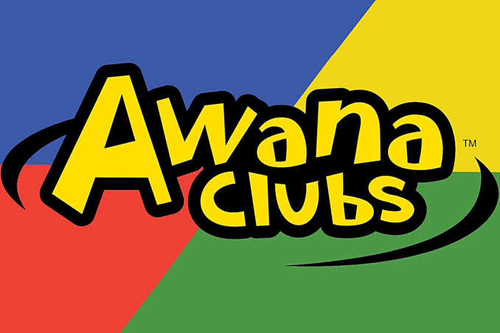

Sundays 9:45 AM
Sunday School
Classes for every age, from newborns all the way up to senior adults.
Sunday SchoolMinistries
From the nursery to our senior adults, there is a class, a club or a study for every age at Layton Chapel.
Our aim here at Layton Chapel Baptist Church is to reach men, women, boys and girls with the Gospel of Jesus Christ. Our ministries and the fellowship we offer will help you develop a deeper relationship with Jesus Christ and with your church family.
The weekly rhythm
Two mornings and one evening. Everything below runs every week.
Sundays 9:45 AM
Classes for every age, from newborns all the way up to senior adults.
Sunday SchoolSundays 11:00 AM
Childcare for infants and toddlers, and Children's Church for ages 4 through 2nd grade.
Children's ministriesWednesdays 6:00 PM
Six clubs covering age 3 through high school, September to May.
AWANA clubsWednesdays 6:00 PM
At the same hour as AWANA, so families can come to church together.
Adult Bible studySundays 11:00 AM
Hymns from the hymnal and preaching from the King James Bible.
What to expectSundays 6:00 PM
A second service on Sunday evening, shorter and less formal than the morning.
Hear a serviceSundays at 9:45 AM
We have an active and growing Sunday School program here at Layton Chapel Baptist Church, and there is something suitable for everyone. It is the goal of our Sunday School program to reach people with the Gospel of Jesus Christ and proclaim His saving power so others may have the Joy and Peace we have in our hearts every day.
It is also our desire to teach and edify the saints of God, so they may have a strong walk with the Lord and grow in His grace and knowledge, while ministering to others.
We have classes for all ages, starting from newborns all the way up to senior adults.
Come a few minutes before 9:45 AM and ask anyone at the door. They will walk you to the right classroom.
Sundays at 11:00 AM
Two options during the morning service, so children are looked after and taught at their own level.
Infants and toddlers
We offer exceptional childcare for infants and toddlers during our Sunday morning services, so you can know that your child is in great hands while you worship God and learn from His Word.
Ages 4 through 2nd grade
All children ages 4 through 2nd grade are invited to attend Children's Church during the 11:00 AM worship service on Sunday mornings. Children's Church is an exciting way for our children to learn about Jesus' love for them and to prepare them for "big church".
Our leaders do a great job of teaching the children.
Ages 3 through high school
Six clubs meeting September to May, with Scripture memory, games and a Bible lesson every week.
AWANA clubsWednesdays, 6:00 to 7:30 PM
The largest of our children's ministries, and the one with its own registration.
AWANA meets every Wednesday from 6:00 to 7:30 PM, September to May, with clubs from age 3 right through high school. It gives children a dynamic approach to learning God's Word, and it runs at the same time as adult Bible study.
Two and three year olds
Preschoolers
Kindergarten through 2nd grade
3rd through 6th grade
Middle school
High school

Wednesdays at 6:00 PM
Adult Bible study meets on Wednesday evenings at 6:00 PM, at the same hour as AWANA, so families can come to church together and everyone has somewhere to be.
It is our aim to equip the men and women of the church to be the leaders God has called them to be. It is our desire to help men meet the challenge of being a Christian husband and father in today's society, and every woman desires close friends who will walk with her through life's joys and sorrows.
There is also a second worship service on Sunday at 6:00 PM, shorter and less formal than the morning. Anyone is welcome.
Beyond the weekly schedule
Alongside the regular schedule, the church holds a Trunk or Treat outreach for the community in the fall, and AWANA runs special theme nights through the club year.
Announcements for anything coming up are posted on our Facebook page, which is the quickest place to find out what is happening this week.
Call the church office and ask for whoever leads it, or send a message and we will pass it along.
Replace this
Needed from the church: the names of ministry leaders for each of the above, plus any ministries not listed here such as a youth group, men's or ladies' ministry, choir or music ministry, or a bus ministry.